Every function in surveyframe is documented. That is a different thing from knowing which survey to build, so this article works the other way round: it starts from the survey you are trying to run and shows the whole path, from the questionnaire to the report.
There are 22 demos, each doing one job. Every one ships an instrument, its response data, a codebook, and the results surveyframe produced, so you can load one, change it, and keep going.
head(sframe_demos()[, c("name", "teaches")], 5)
#> name teaches
#> 1 first_survey Design, export, collect, describe
#> 2 likert_scale A scale and whether it holds together
#> 3 matrix_likert A matrix item and the columns it expands into
#> 4 two_group Two groups on one outcome
#> 5 paired The same people measured twiceRead this as your own field
Every demo describes an event, its attendees and its sessions. That reads as a conference, a training day, a health promotion event, a product launch or a community meeting, so translate it once and then stop noticing:
| In these demos | Read it as |
|---|---|
| attendees | patients, customers, participants, employees, delegates |
| sessions | consultations, touchpoints, lessons, clinics, product features |
| the event | a programme, a service, a campaign, a course, an intervention |
| intention to return | adherence, repurchase, retention, re-enrolment |
The designs are the same whatever the setting. A before-and-after measure is a before-and-after measure whether the thing in between is a workshop or a clinic appointment.
Which demo do I need?
Choose by the data you have, rather than by the name of a test.
| You have | Use | Demo |
|---|---|---|
| A few questions and no plan yet | Start here | first_survey |
| Several items meant to measure one thing | A scale, and its reliability | likert_scale |
| A grid of items rated on one scale | A matrix item | matrix_likert |
| One number and two groups | A two-group comparison | two_group |
| The same people measured twice | A paired test | paired |
| One number and three or more groups | ANOVA and its alternatives | multi_group |
| The same people measured three times | Repeated measures | repeated |
| Two categorical questions | A crosstab and a test of association | categorical |
| Several numbers that may go together | Correlation and regression | correlation_regression |
| A yes/no, ordered, or multi-category outcome | Logistic regression | logistic |
| Many items and a hunch about the structure | Factor analysis | factor_structure |
| Constructs and a path model | SEM and PLS | sem_pls |
| Questions only some people should see | Skip logic | branching |
| Free-text answers | Text analysis | open_text |
| A decision between options on several criteria | MCDA | mcdm_choice |
| Fewer than 30 respondents | Small-sample methods | small_sample |
| Tick-all-that-apply, or a ranking | Items that expand | multi_response |
The shape of every study
The path is the same each time, and surveyframe holds the questionnaire, the plan, the data contract and the report together as one object.
design -> export -> collect -> read -> analyse -> report
sf_instrument() export_static_survey() read_responses() render_report()
render_survey(mode = "shiny") run_analysis_plan()The step that matters is the first one. The analysis plan is declared inside the instrument, before any data exists, so running it later is the execution of a contract rather than a search for something significant.
Start here: your first survey
demo <- sframe_demo("first_survey")
demo$instrument
#> <sframe>
#> Title: Event feedback
#> Version: 1.0.0
#> Items: 6
#> Scales: 0
#> Analysis: 4 block(s)
#> Status: validFour questions, a section break, and a plan with four blocks. This is what a respondent sees:
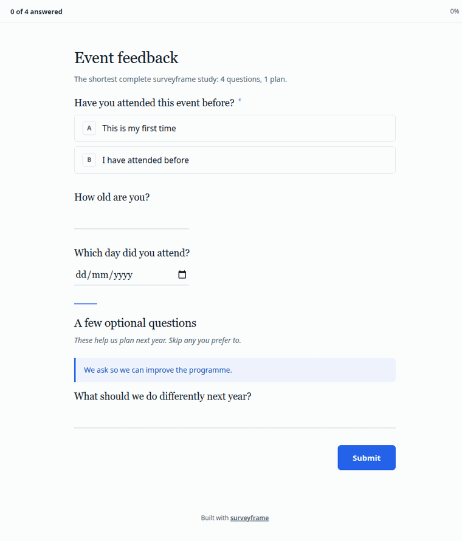
The plan was written at design time:
do.call(rbind, lapply(sf_plan(demo$instrument), function(b) {
data.frame(id = b$id, question = b$research_question, method = b$method)
}))
#> id question method
#> 1 RQ1 Who came to the event? frequency
#> 2 RQ2 How old are attendees? descriptives
#> 3 RQ3 How complete is the data? missing_data
#> 4 RQ4 Are there inattentive responses? qualityAnd running it is one call:
results <- run_analysis_plan(demo$responses, demo$instrument)
results[[1]]$apa
#> [1] "Frequency distribution for NA (N = 0)."Adapt this for your own survey. Replace the items with your questions, declare your own plan, and the rest is unchanged.
Compare groups
Two groups on one outcome
The commonest comparison there is: one number, and two groups of people.
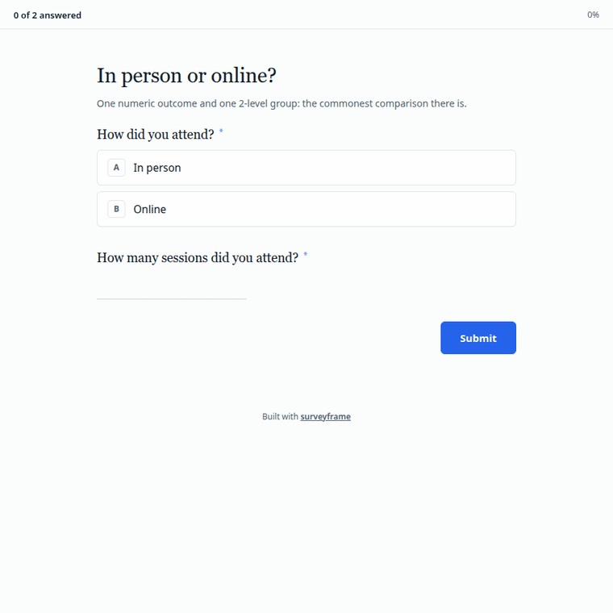
tg <- sframe_demo("two_group")
res <- run_analysis_plan(tg$responses, tg$instrument)
for (b in res) cat(b$test, ": ", b$apa, "\n", sep = "")
#> t_test_ind: t(57.89) = 3.36, p = 0.001, d = 0.87 [0.43, 1.35]
#> mann_whitney: U = 626, z = -2.62, p = 0.009, r = 0.34 [0.10, 0.54], Hodges-Lehmann shift = 2.00 [0.00, 3.00]Both tests are declared, so you report both rather than choosing afterwards whichever gave the smaller p value.
The same people, measured twice
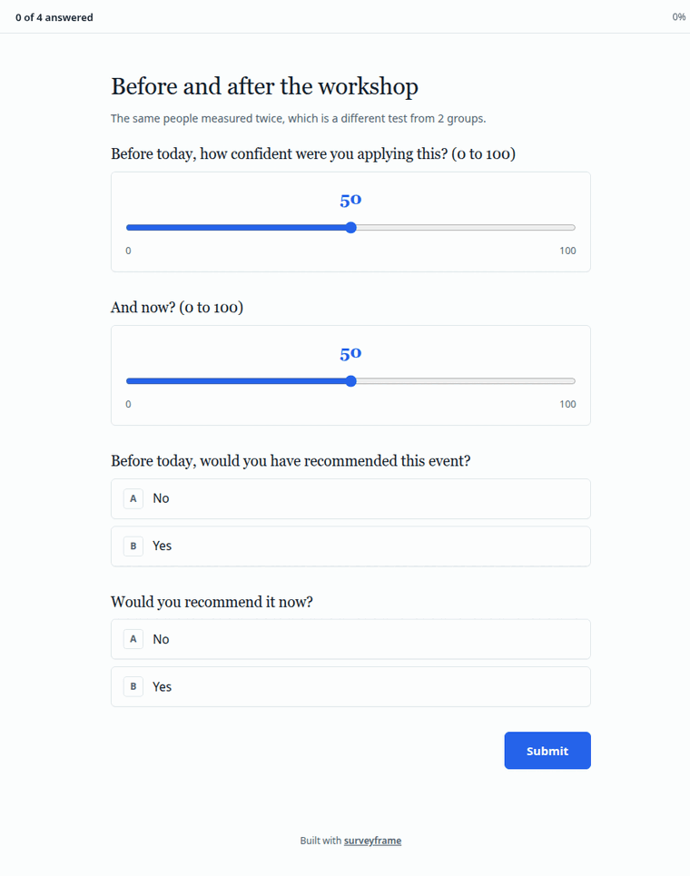
pr <- sframe_demo("paired")
for (b in run_analysis_plan(pr$responses, pr$instrument)) {
cat(b$test, ": ", b$apa, "\n", sep = "")
}
#> t_test_pair: t(49) = -5.11, p < .001, d_z = -0.72 [-1.00, -0.49]
#> wilcoxon_pair: V = 156, z = -4.31, p < .001, r = 0.61 [0.43, 0.77], pseudomedian = -7.50 [-12.00, -4.00]
#> mcnemar: McNemar's chi-square(1) = 11.08, p < .001Three groups, a second factor, and a covariate
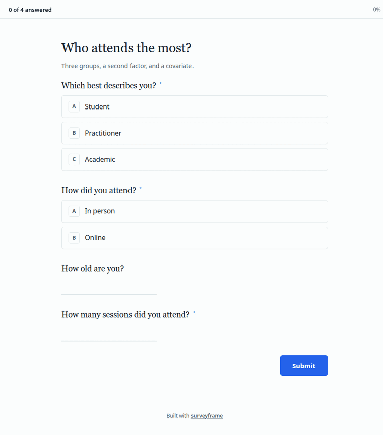
mg <- sframe_demo("multi_group")
for (b in run_analysis_plan(mg$responses, mg$instrument)[1:2]) {
cat(b$test, ": ", b$apa, "\n", sep = "")
}
#> anova_one: F(2, 72) = 7.27, p = 0.001, η² = 0.168 [0.07, 0.34]
#> kruskal_wallis: H(2) = 12.01, p = 0.002, η² = 0.139 [0.02, 0.33]repeated and categorical follow the same
shape. See sframe_demo("repeated") and
sframe_demo("categorical").
Scales, structure and models
A scale, and whether it holds together
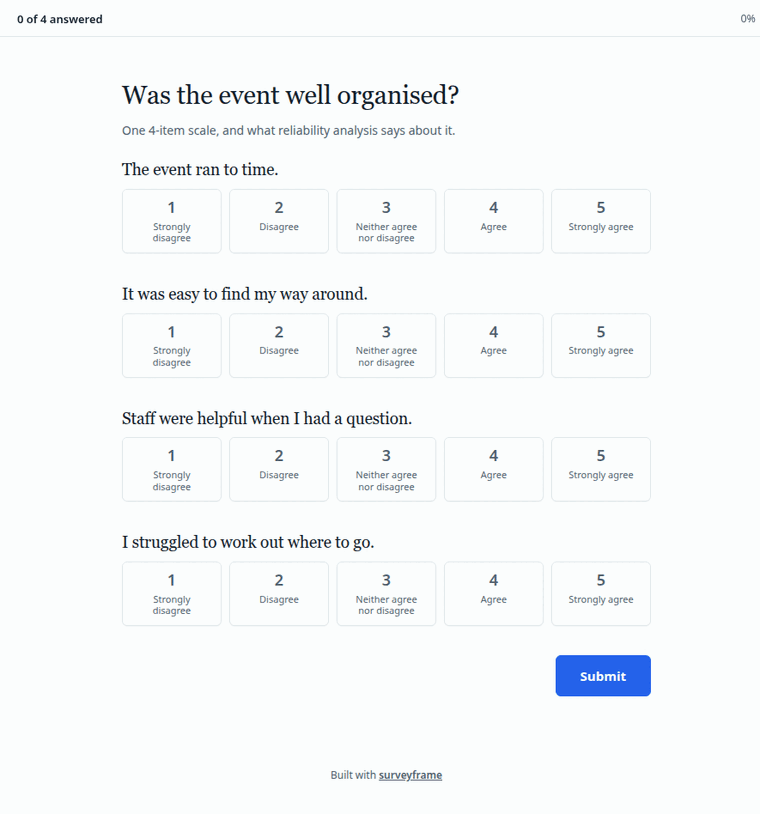
ls_demo <- sframe_demo("likert_scale")
rel <- reliability_report(ls_demo$responses, ls_demo$instrument)
as.data.frame(rel)[, c("scale_id", "n_items", "alpha")]
#> scale_id n_items alpha
#> 1 organisation 4 0.8473312One item is reverse worded and declared with
reverse = TRUE, so scoring handles it and you do not have
to remember.
Factor structure, and a path model
factor_structure asks whether the data supports the
factors you assumed. sem_pls declares three constructs and
a path model, and generates the syntax for both lavaan and seminr. The
model type decides which: asking for PLS syntax from a covariance-based
model is refused, because it would estimate a different model from the
one you declared.
sem <- sframe_demo("sem_pls")
vapply(sf_models(sem$instrument), function(m) m$type, character(1))
#> m1 m2 m3
#> "cb_sem" "pls_sem" "cfa"Question types worth meeting
A matrix item, and the columns it becomes
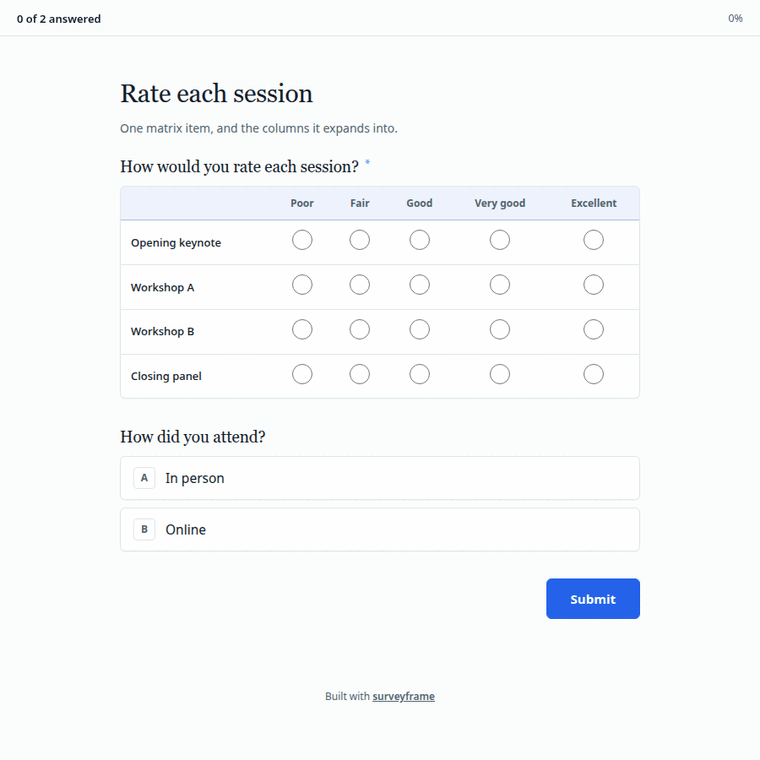
A matrix does not write one column named after the item. It expands, one column per row:
ml <- sframe_demo("matrix_likert")
grep("^session__", names(ml$responses), value = TRUE)
#> [1] "session__Opening keynote" "session__Workshop A"
#> [3] "session__Workshop B" "session__Closing panel"multiple_choice and ranking expand the same
way, one column per option. See
sframe_demo("multi_response").
A trap worth knowing. When a matrix row label
contains a space, the column does too, and read.csv() will
quietly rewrite session__Opening keynote as
session__Opening.keynote, which no longer matches the
contract the instrument declares. Read with
check.names = FALSE.
Questions only some people see
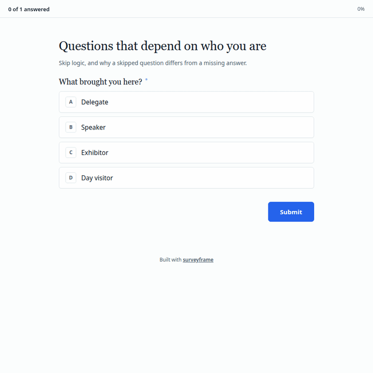
br <- sframe_demo("branching")
sf_branches(br$instrument)[[1]]
#> <sf_branch: sessions_attended>
#> Rule: show when attendee_type %in% delegate, speakerA blank left by skip logic is structural, not missing data. The respondent was never asked. That distinction matters when you report completeness.
Free text
ot <- sframe_demo("open_text")
tf <- run_analysis_plan(ot$responses, ot$instrument)[[1]]
#> Warning in stm::stm(prepped$documents, prepped$vocab, K = k, verbose = FALSE):
#> K=2 is equivalent to a unidimensional scaling model which you may prefer.
head(tf$table, 5)
#> term n pct
#> 1 sessions 28 10.6
#> 2 excellent 22 8.3
#> 3 well 21 8.0
#> 4 good 19 7.2
#> 5 useful 19 7.2Make it yours
Every demo above ships plain. The whole appearance of a survey lives
in one render block, which you can read, change and paste
into your own instrument:
str(sframe_demo_branding(), max.level = 1)
#> List of 6
#> $ mode : chr "standard"
#> $ theme : chr "#2563eb"
#> $ submit_label: chr "Send my feedback"
#> $ welcome :List of 5
#> $ thankyou :List of 3
#> $ header :List of 3Applied to any demo with branded = TRUE, which changes
nothing on disk:
sframe_demo("two_group", branded = TRUE)Plain, then the welcome page a respondent meets first, then the questions:

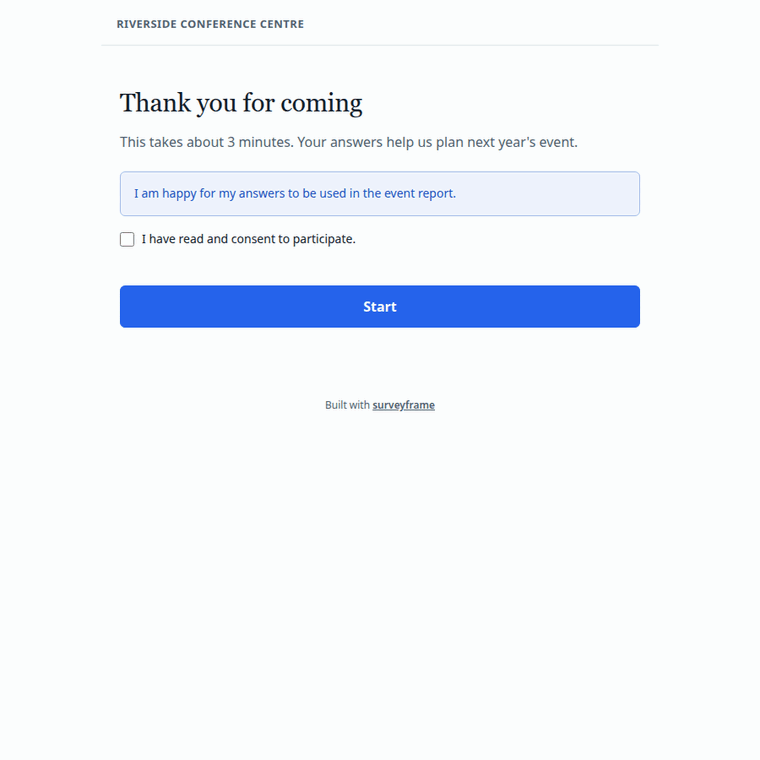
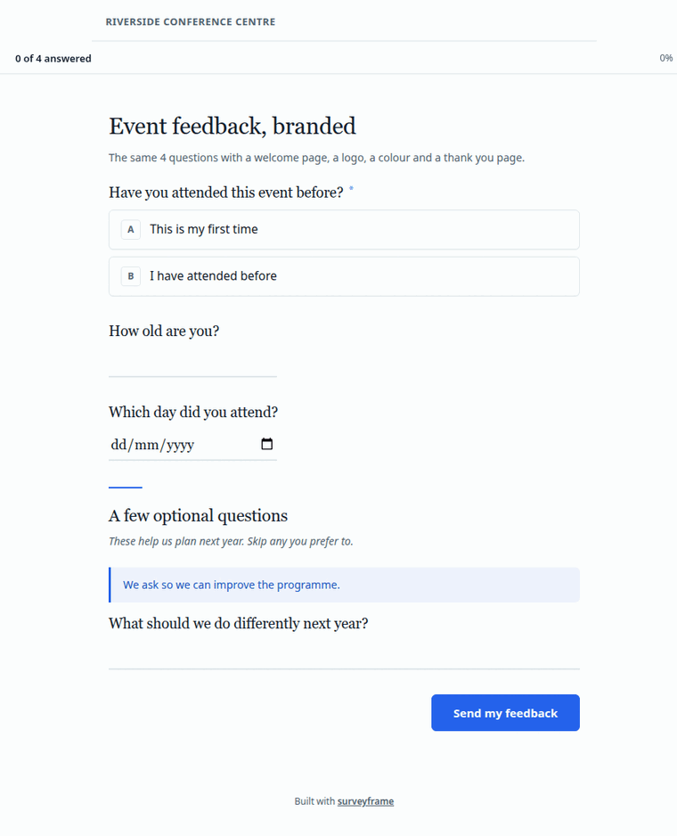
Consent is enforced rather than decorative: with
consent_required = TRUE, pressing Start without ticking the
box refuses to continue.
One page, or one question at a time
render$mode takes "standard", which is
everything on one page, or "conversational", which is one
question at a time with a progress bar.
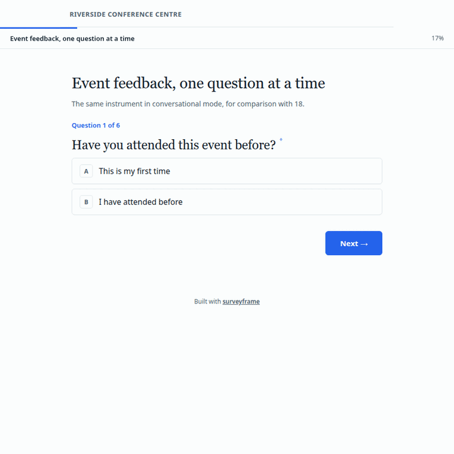
Conversational mode works with skip logic, which is the combination most likely to surprise: a hidden question is stepped over without leaving the respondent on a blank card.
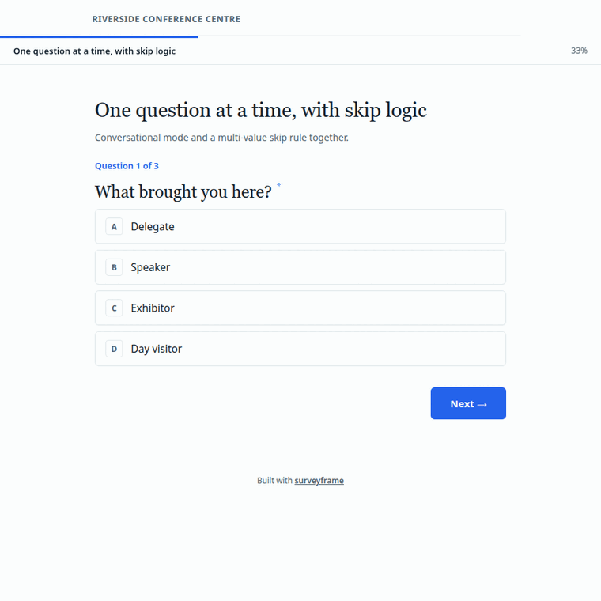
Collect responses, and share the results
Three routes, and the same instrument serves all three.
# 1. One self-contained HTML file you can host or email
export_static_survey(demo$instrument, "survey.html")
# 2. A Shiny app
render_survey(demo$instrument, mode = "shiny")
# 3. A Google Sheets collector, generated as an Apps Script
export_google_sheet(demo$instrument, sheet_url = "https://...")Then the report:
render_report(demo$instrument, demo$responses, output_path = "report.html")render_report() prefers Quarto and falls back to a
built-in HTML writer. It tells you which one it used,
in a message, in an engine attribute on the path it
returns, and in the report itself beside the instrument hash and the
analysis seed. For a thesis or a journal,
plot_palette = "print" swaps the colour charts for
greyscale, and format = "pdf" writes a PDF.
Declare, revise, verify
This is what separates surveyframe from a form builder, and it is worth seeing before you decide whether to use it.
Changing an instrument mid-study, on the record
A pilot often shows that a question needs rewording. Doing that quietly leaves nobody able to tell which version a respondent saw.
rev <- sframe_demo("instrument_revision")
log <- as.data.frame(amendment_log(rev$instrument))
log[, c("reason_code", "tier", "reason_text")]
#> reason_code tier
#> 1 instrument_revision design
#> reason_text
#> 1 Reworded the open question after a face-validity pass: readers were listing several changes at once, so the answers were hard to code.The amendment carries a reason code, a tier, an author and a deviation report, and it travels inside the instrument.
Proving a file is the one you think it is
Every .sframe carries a SHA-256 of its own contents. The
demo ships a clean file and a tampered copy, altered in a single
response label with the stored hash left alone:
v <- sframe_demo("verification")
tampered <- file.path(dirname(v$instrument_path), "verification_tampered.sframe")
read_sframe(tampered)
#> Error in `sframe_abort_import()`:
#> ! Integrity check failed for '/home/runner/work/_temp/Library/surveyframe/extdata/demos/verification_tampered.sframe'. The file may have been modified after it was written. Expected hash: cd0559dd3d78521f047d795300a3e5432ca759354efce4e6383b094c4bf7ef00. Stored hash: a677623e873632d441187904c82cb3067e3c2e6130b5991f618e8509f4473106.The file refuses to load. That is what the hash is for.
Are you an instructor? Do you want to verify against established software?
Good. Please check us against the software you already trust.
Every demo ships four things: the instrument, the response data, a codebook of variable and value labels, and the results surveyframe produced.
d <- sframe_demo("two_group")
basename(unlist(d[c("instrument_path", "responses_path",
"codebook_path", "results_path")]))
#> [1] "two_group.sframe" "two_group_responses.csv"
#> [3] "two_group_codebook.csv" "two_group_results.csv"Take them into psych, SPSS, JASP, jamovi or Stata, run
the same test, and compare.
sframe_export_labelled(d$responses, d$instrument, "two_group.sav")The .sav arrives with the question wording and the
response options already attached, so your variables read “The event ran
to time.” and “Strongly disagree” rather than org_1 and
1. The plain CSV carries codes, and the
codebook is what gives them meaning, so use one or the other.
If a number comes out differently, we want to hear about it. Open an issue with the demo name, the software you used, and both results. A disagreement is either a bug worth fixing or a difference in method worth documenting, and we would rather find out from you than not at all.
Run one yourself
Each demo comes with a Quarto notebook: load, read, run the plan, render a report, export for checking elsewhere.
sframe_demo_qmd("two_group")Render it, then start replacing the demo with your own study.
Found a bug, or something that could be clearer?
surveyframe is developed in the open at github.com/MohammedAliSharafuddin/surveyframe. Bug reports, questions, and suggestions for a demo that would have helped you are all welcome on the issue tracker. If a result looks wrong, please include the demo name and what you compared against, since that turns a report into something fixable in one step.